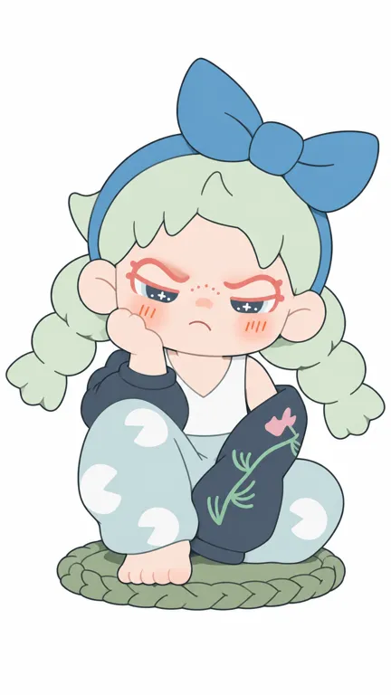

01
圆润的样子，也能有不讨好的态度
官方定位与研究解释分开。
TNTSPACE / STANDARD STUDY / 2026.10.21
把态度，
穿在身上。
圆润的体块，带距离感的眉眼。
从收藏柜，走向可携带、可变装的日常。

态度留在脸上，主题进入服装，
拥有的方式随载体改变。
官方定位与研究解释分开。
创始团队历史、品牌起步与角色发布分别记录。
| 时间 | 可核事件与边界 |
|---|---|
| 2022年 | 品牌2026英文回顾称DORA在2022年诞生；早期草图、创作日及官方作者履历未取得。 [A02] |
| 2022-07-30 | 拒绝定义系列官方图鉴的发布日期；用户图鉴另列7月13日，两种日期并存，不认定哪个是首次开售。 [S01] [X02] |
| 2022-12-24 | 早期报道记录杭州in77 DORA生人勿近主题发售现场；展会日期与系列创作日分开。 [A03] |
| 2023-02／03 | 早期报道回顾首系列四个月约50万只；品牌发布“大盲盒”与渠道合作策略。 [A03] [A08] |
| 2024-10-17 | CEO原访谈谈每IP设计师＋主理人分工，以及按层级配置零售合作门店。 [A04] |
| 2025-04-08 | 创始人分享整理回顾从线上渠道走向自研IP；经营预期不当作后来已实现业绩。 [A05] |
| 2026-06-27 | 甜酷警告毛绒挂件官方图鉴发布；产品把服装穿脱与携带功能纳入玩法。 [S04] |
| 2026-07-01 | BABY DORA一口小面包mini系列图鉴发布，出现更圆小、更松软的主题分支。 [S05] |
| 2026年8月 | 官网目录列404街区系列，说明持续上新；目录存在不证明销量增长。 [A01] |
五组官方商品图，加一组品牌站内二维投稿方案。


原图引用原站URL，未随报告打包分发；小红书配图单独记录身份与已读页数。缺官方标准侧背面，不补画不可见结构。
五条轴的观察，不是对全系列下绝对规则。
| 轴 | 本轮观察 | 变量与边界 |
|---|---|---|
| 原型／轮廓 | 类人女孩，大头小身，宽圆脸、大耳与紧凑鼻嘴 | 坐姿、站姿、毛绒与BABY比例不同 |
| 记忆点 | 粗弧眉、星点眼、鼻上小点、脸侧短线和小嘴的关系 | 公共元素本身不专属；要看具体组合和尺度 |
| 五官 | 有压眉与下弯小嘴；V01半闭眼，V05眼睛更大 | V03嘴被遮住；眼色、开合、眼妆会变 |
| 头型与装扮 | 辫子、短发、帽子、头套和毛绒发型均出现 | 不能把双辫、蓝结或某一发色设为全IP强制标准 |
| 表情／识别 | 圆润体块对带距离感的神态；不同主题可变甜美或安静 | 属于研究观察，未做用户辨识率、裁切、剪影或实体5cm测试 |
以下仅取自V01官方渲染图。
六点均来自2160×3840 RGBA文件中的不透明像素。原图存在高光与阴影，取样是屏幕记录；肤色的灰粉感不能当作材料染色标准。没有主体分割，不给面积百分比。
V02青灰粉、V03紫白金、V05浅金蓝白、V06红粉绿，说明主题色变化很大。暂无充分依据认定某一种发色或衣色是全IP签名色。识别应连同眉眼和脸部关系看。
未取得PANTONE或供应商色卡，未实测灰度、缩小、杂背景或实物色差；出图描述与实物验收分别处理。
不替它补一套尚未核实的长篇故事。
拒绝定义、生人勿近等主题让姿态与服装承载角色表达；图鉴读者会用系列名和款名讨论自己的偏好。[S01] [X01] [X02]
甜酷警告官方说明服装可穿脱，兼顾挂包或钥匙串用途。对用户而言，穿什么、挂在哪里，可以成为内容的一部分。[S04]
BABY DORA面包主题强调休息和窝一会儿；这与单纯“永远很凶”的概括不同。它在官网仍归DR目录。[S05]
本轮未核到连续漫画或动画体系，未连续采集账号内容或统计互动中位数；不能仅凭产品页宣称已经建立稳定内容留存。
代表产品按SKU核对，未冒充销量排行。
| 代表产品 | 规格与玩法 | 价格与边界 |
|---|---|---|
| 拒绝定义／冥想者 | 官方归PVC盲盒；图鉴端盒9个；V01以托腮和编织坐垫形成陈列姿态。[S01] | 首次原价、尺寸与首卖日未知；不按端盒数反推全系列款数。 |
| 2023“大盲盒”策略 | 品牌早期谈更大尺度和工艺组合，DORA二代被作为首款大盲盒案例。[A03] | 当时品牌策略价74元人民币；不是今天每个DORA的统一售价。 |
| 甜酷警告毛绒挂件 | PVC／聚酯纤维／金属；服装可穿脱，挂包或钥匙串。产品信息写16—17cm，规则插画约15.5cm。[S03] [S04] | 2026-10-21美国站商店列表from $19.50；IP图鉴$21.50。价差与尺寸范围差异未核，不合成一个精确价格/高度。 |
| 甜酷警告随机规则 | 6常规＋1隐藏；一盒6个、不重复；隐藏顶替一常规，概率1:72。[S03] | 不是7个一盒；只适用于此系列。 |
| BABY DORA一口小面包mini | 官方主图写6常规＋1小隐藏＋1大隐藏，端盒6个。PVC盲盒类目；可见面包形支撑。[S05] | 美国站总图鉴条目标CN¥39；实际地区成交价和准确产品尺寸未核。 |
“毛感”“透明感”“光泽”为图像观察；PVC／聚酯／金属为对应系列官方规格。未由照片确定搪胶、内部骨架、真实皮草或耐久性能。[S03]
历史零售额不等于当前收入。
首系列／四个月
50万 只2023报道回顾
经营者供数，非审计
2024访谈所称／年度零售额
3亿+ 人民币元DORA单IP自述
统计年度范围未定义
较早中文报道写50万“只”；品牌2026英文回顾用units，繁中译文和商家有“套／sets”写法。这里保留早期“只”的口径，同时披露差异，不据此乘以端盒数量。[A03] [A08] [A02] [A07]
3亿元以上是CEO在2024访谈中所述年零售额，不是财报收入、利润或2026业绩。公司整体盲盒销量、粉丝与活动销售不能全部归给DORA。[A04]
把公司自述的经营方法与验证结果分开。
早期报道描述内部筛选、用户评判与众筹验证，并与渠道商合作。它们提供了角色被看见和购买的条件。[A03]
2024访谈称，设计师把控审美，主理人负责故事、物料、联名和活动呈现。具体团队规模与单IP成本未知。[A04]
2024访谈谈合作零售与门店分层；“当时没有自营门店”不能沿用成2026现状。[A04]
这些经营动作与大盲盒产品策略、线下开箱体验一起构成历史语境。未取得同期失败项目、区域对照或渠道净贡献，不能把所有结果单因归给设计或流量。
三篇小红书已读范围明确，另加一组海外讨论。
介绍笔记下，有人回答生人勿近、逃离计划、百无禁忌；也有人询问首图款名与价格。说明偏好会具体到系列和单款。[X01]
10页图鉴整理18系列，明确排除单品与萌粒。评论会讨论隐藏款、脚底标识和持续更新，不能据此认定所有人都会端盒。[X02]
收藏者自述收集一年，每只都能讲经历，收到开箱时感到释然；首图可见多层收藏柜。是个人持有与情绪记录。[X03]
海外讨论中，有人想买DORA，却难判断卖家是否可信、担心质量；同帖也有人称持有的产品质量好。渠道可得性与信任，可能影响兴趣到购买的过程。[A09]
会员积分门槛为评论中的用户自述，未核官方现行政策。没有代表性抽样和交易明细，不算用户画像、复购率或投诉率。介绍看1/6、图鉴看10/10、收藏柜看1/3。
外壳、内核与两层用户都回到证据。
| 候选机制 | 观察依据 | 边界 |
|---|---|---|
| 在圆润幼态的体块里，保留不讨好人的眉眼态度。 | V01半闭眼、下弯小嘴和托腮对照宽圆脸；V05毛绒形态仍用压眉、鼻点和嘴形保留态度。 [A01] [S01] [S03] | “拽酷”是官方定位；不能据此认定所有买家都在反抗、也不能将半闭眼设为每款不变量。 |
| 角色识别可留在脸部关系，主题在头发、服装、材质与眼部装饰上展开。 | V01—V03早期三款、V05毛绒、V06 BABY分支在配色、发型和载体上明显不同。 [S01] [S03] [S05] | 仅为跨样本视觉归纳，未做盲测识别率；变体越远越需要单独核验。 |
| 产品主题与可玩方式，让角色进入收藏、穿搭和携带情境。 | 手办陈列，甜酷警告可穿脱服装与挂件功能；收藏柜笔记出现持续收集、等待与开箱自述。 [S04] [X03] | 功能与个案可核；没有证据量化其对整体收入或复购的贡献。 |
| 形象背后有筛选、主理与渠道协作，传播结果不能只归给一张脸。 | 早期报道的投票／众筹验证与渠道签约，CEO谈设计师和主理人的职责。 [A03] [A04] | 这些是公司自述的运营方法；没有失败项目或对照数据来量化净效果。 |
路人可能先被颜色、表情、服装或毛绒触感吸引，属于研究假设。
收藏者按系列和款名查漏补缺，陈列并讲述等待、开箱的经历；局部样本不能代表所有用户。
大头、星眼、雀斑、双辫属于常见视觉语言，身份在于具体关系与持续产品语境；不据元素相同直接判抄袭或成功。
未取得可靠失败系列销量或相似但未成功IP的同口径对照；本轮不能宣称已总结出成功公式。
目标：拒绝定义系列“冥想者”官方商品渲染图。

以下依据可见作品进行研究重建，不是创作者原始提示词，不能证明原作品由AI制作。纯文字与附图结果分别记录；中文已测，英文未测。
复制时必须同时附上V01官方原图，仅用于本款可见正面二维转绘。
将附图中的单角色忠实转绘成白底二维平涂设定插画。附图是唯一身份、几何比例、五官、发型、姿态、服饰图案与色块依据；只去掉三维光影和表面高光，保留所有可见造型。不要把它重新设计成动漫少女、漫画大眼女孩或普通可爱娃娃。 完整保留头顶蓝色发箍和偏画面右侧的大蝴蝶结，浅薄荷绿厚块状短刘海和左右粗短三四节麻花辫，圆宽短脸和两侧大耳；头发为几个大块，不增加细碎发丝和额外卷发。完全沿用原图脸型和短下巴。眉毛是珊瑚红上拱圆弧，眉头压低，不能变成两片尖三角怒眉。保持上部白色眼妆区域、向内下斜的珊瑚红眼睑、下方深蓝灰半闭虹膜和其中十字星小亮点，眼睛不能放大或转为对称圆眼。鼻梁上的小雀斑、每侧三条细橙线腮红、小圆鼻及向下弯的极小嘴都照图保留。 保持画面左手托脸、同侧膝盖高起、另一腿向画面右侧折叠的紧凑坐姿，左下只露一只小裸脚。白色背心、深蓝灰滑肩宽松外套、浅蓝绿宽裤和绿色薄椭圆编织坐垫的形状与位置照图。外套是简化的薄荷细枝叶和单朵小粉花，不增加花瓣、密集叶片或大片印花；裤子保留白色缺口圆形块，不能画成五瓣花。所有相对尺寸和遮挡完全参照附图，不拉长身体或辫子。 画面居中，完整角色四周留白，蝴蝶结顶端和坐垫不得裁切。均匀纯色块，清楚而不过粗的圆润轮廓线；没有立体渐变、高光、投影、纸纹、摄影、文字、商标和额外装饰。保留原图的倔强托腮神情，不能柔化成微笑，也不能夸张成愤怒咆哮。 校准：严格依附图保持紧凑的躯干与圆大高起的左膝，白色内搭为窄肩V领而非大U领，胸腹不能拉长。画面左侧托腮手是小而饱满的拳形，减少写实手指分界；鼻子保留小圆形，不能画成横宽椭圆。每眼十字亮点两旁保留极小圆点。双颊的短竖线每侧三根，不得变成四根。绿色坐垫薄而扁，只用简化的编织外缘，不画厚高台。保留已接近的轮廓、眉眼、衣裤色区和图案。进一步消除脸部和头发渐变，保持纯色平涂。下载完整原词
实际看图逐项比较，没有伪造相似度分数；ready只表示指定参考辅助平面范围接近，不替代用户审美选择、重复稳定性或实物打样。
保留原工作流，当前仅完成研究与指定SKU平面验证。
把个人态度落进具体处境和选择，不以“拽酷”两个字代替内核；新角色另定表达。
研究圆润体块与有距离感的面部关系；另定轮廓、五官和识别锚点，不搬专属组合。
把陈列、携带、穿脱和开箱作为不同任务研究；主题可以变化，但跨载体要单独检查识别。本轮只验证指定SKU平面。
截止2026-10-21；事实、自述、用户反馈与推断分别标注。
TNTSPACE · 发布：未知／见边界 · 访问：full
不含设计师署名/履历；目录不证明销量。
TNTSPACE · 发布：2026-05-09 · 访问：full
宣传叙事非审计；2026发布仍有2025预测净利，不可当实际值。早年团队与2022品牌不可混同。
CLE中国授权展 · 发布：2023-03-02 · 访问：full
行业报道含公司供数，不是审计；页面3.2.2023日期按月日读取。泛行业投诉不得归DORA。
胖鲸／CEO王泽群原访谈 · 发布：2024-10-17 · 访问：full
所有经营数字self_report；零售额统计年未明，品牌总量非DORA；无店仅2024时点。
中欧国际工商学院／创始人分享整理 · 发布：2025-04-08 · 访问：full
不是学术独立验证或审计；历史项目不等于DORA诞生年份；预测兑现未知。
TOYSEZ商家 · 发布：2023-09-26 · 访问：full
非权利人或作者一手署名，仅线索；不证明中文实名/版权关系。
TOYSEZ商家 · 发布：未知／见边界 · 访问：full
商家署名仅为线索；sets与较早中文报道“只”存在单位差异。品牌2021说法未获一手核实，不补造筹备年。
文创潮／新浪转载 · 发布：2023-02-25 · 访问：full
经营者自述，无订单审计；百度/财经头条等版本为同源转载，不增加独立性。
Reddit r/vinyltoys 用户原帖 · 发布：未知／见边界 · 访问：full
自选少量帖子；页面只显示2y ago，未补造精确日期；不证明总体不满或假货发生率。
TNTSPACE · 发布：未知／见边界 · 访问：partial
图鉴标发布2022-07-30；不等于独立核得首次开售日。端盒9个不自动等于全系列只有9款。
TNTSPACE站内IP-X Club／投稿账户North Mound · 发布：未知／见边界 · 访问：partial
品牌网站托管的方案页，投稿账户不等于已核实的原作者或著作权人；无可靠发布时间。不能把此图认作官方基础设定或把署名改成TUTU。
TNTSPACE · 发布：未知／见边界 · 访问：partial
2026-10-21美国站商品列表from $19.50；图鉴显示$21.50，价差口径未核。产品图规格16—17cm，规则页插画标约15.5cm，测量范围有差异。
TNTSPACE · 发布：未知／见边界 · 访问：partial
图鉴发布日期2026-06-27；用户图鉴标7月3日，未核不同市场的上市日。物流尺寸未显单位，不换算产品尺寸。
TNTSPACE · 发布：未知／见边界 · 访问：partial
图鉴发布2026-07-01；美国站总图鉴该条列CN¥39，不冒充中国当前成交价。物流尺寸单位未明；未读完16张详情图。
小红书／小猛牛IP笔记 · 发布：2025-04-23 · 访问：partial
正文、可见评论及封面1/6已读，未看其余5张。DUDOO姐姐为笔记说法，本轮未获官方关系设定；封面身份与官方商品可对照，原图权利链未核。
小红书／王小胖没烦恼 · 发布：未知／见边界 · 访问：partial
正文、可见评论和10/10图均已读。显示08-11，正文无独立年份；图中最晚日期到2026，不能因此补造笔记发布时间。18系列为作者整理，排除单品和萌粒，并非截至今日全量。
小红书／Linggggg。 · 发布：未知／见边界 · 访问：partial
正文、可见评论与收藏柜封面1/3已读。页面显示09-24，正文提到2026年度；发布时间年份未单独确认。未看图2/3，未核交易凭证。